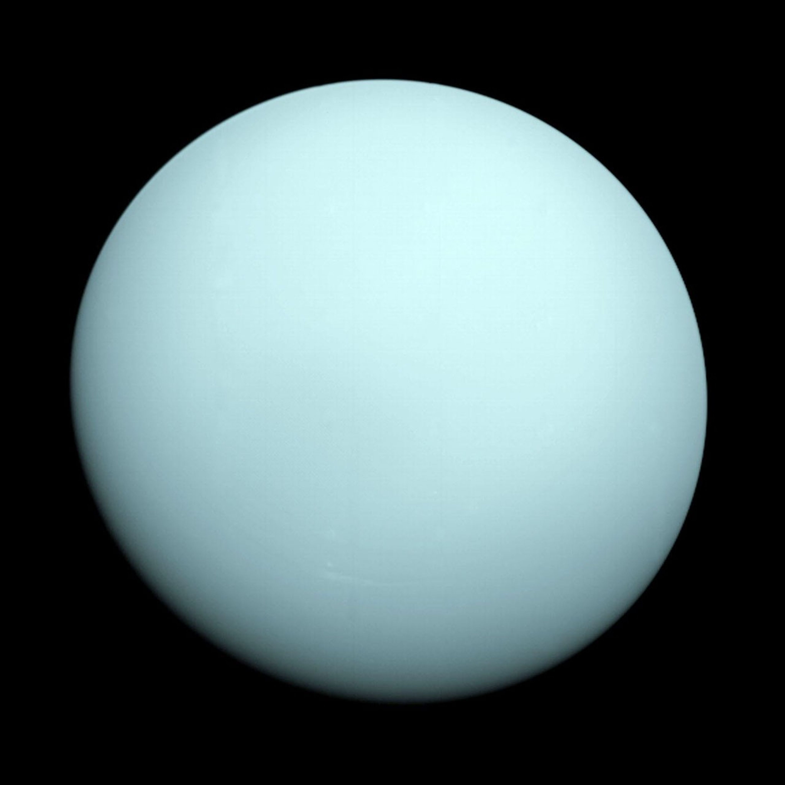

Uranus

Uranus is the seventh planet from the Sun. It has the third-largest planetary radius and fourth-largest planetary mass in the Solar System. Uranus is unique for its blue-green color and its extreme axial tilt.
Interesting Facts about Uranus
- Uranus has a thick atmosphere composed mainly of hydrogen, helium, and methane, which gives it its blue-green color.
- Uranus has 27 known moons, with Titania being the largest.
- Uranus has a faint ring system composed of dark, narrow rings.
- Uranus rotates on its side, with an axial tilt of 98 degrees, making its rotation unique among the planets.
- A day on Uranus (one rotation) takes about 17 hours and 14 minutes.
- A year on Uranus (one orbit around the Sun) takes about 84 Earth years.
Home